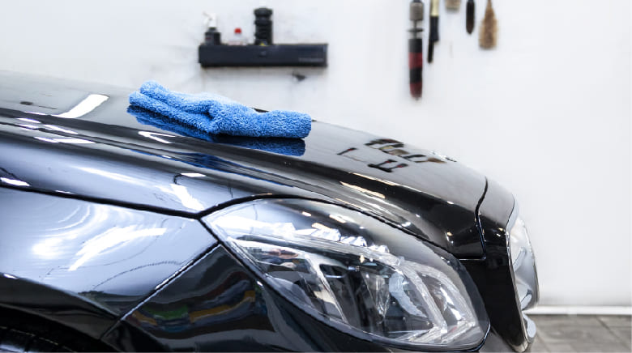
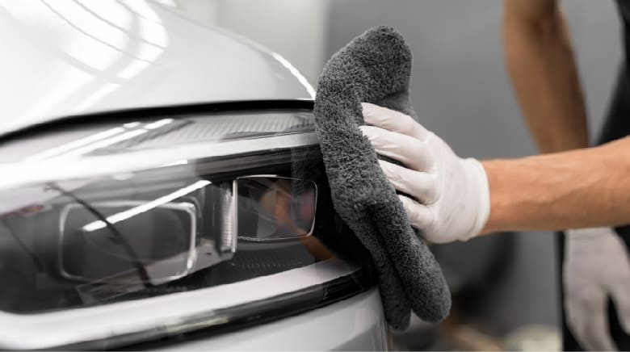
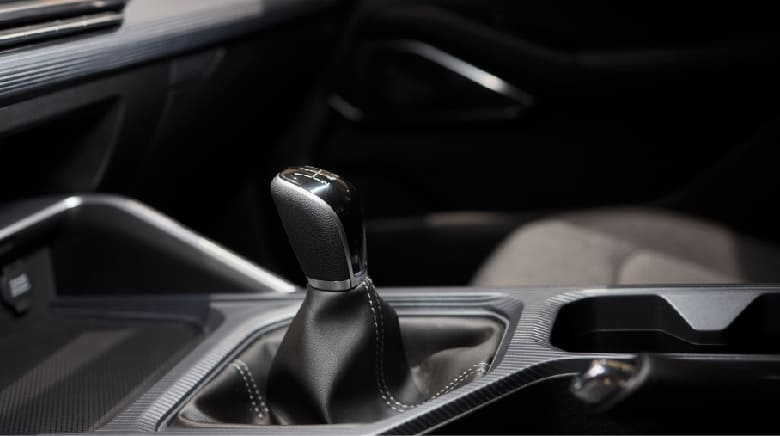
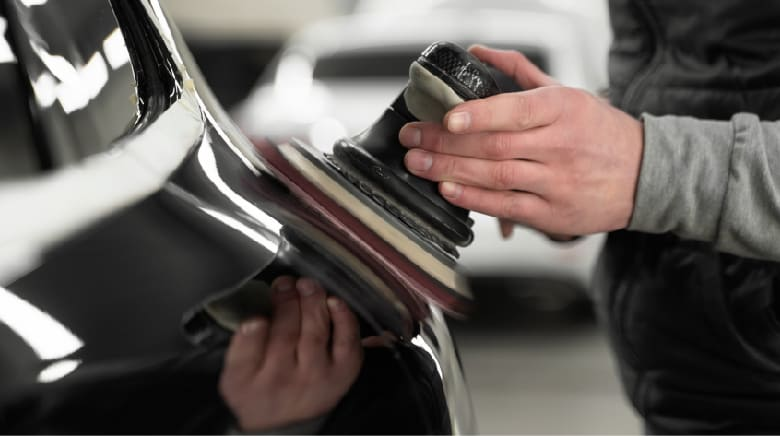
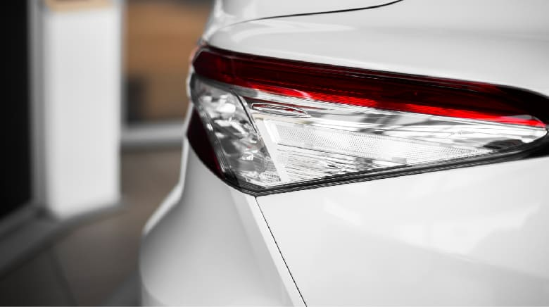
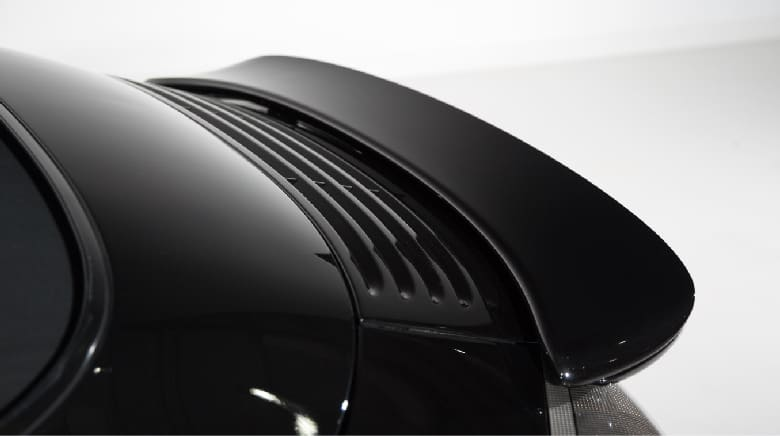

從車況評估到完工交車 每一步都細心對待
SERVICE透過電話或線上聯繫威克，告知車型、目前車況及想施作的服務項目，預約合適的到店時間。


車輛到店後進行車況與漆面檢視，依實際狀況及車主需求，建議合適的汽車美容、打蠟、拋光、鍍膜或內裝清潔方案。
確認施作項目、費用及預計作業時間，讓車主了解本次服務內容後，再進行後續汽車美容施作。


依選擇的服務方案進行車體清潔、汽車打蠟、拋光美容、車體鍍膜、玻璃鍍膜或內裝清潔，針對不同部位細心處理。
服務完成後進行整體檢查，確認車體外觀、細節及施作項目完成狀況，做好最後品質把關。


完工後與車主確認車況，依施作項目說明後續清潔與日常養護注意事項，讓美容與鍍膜持效得更長久。